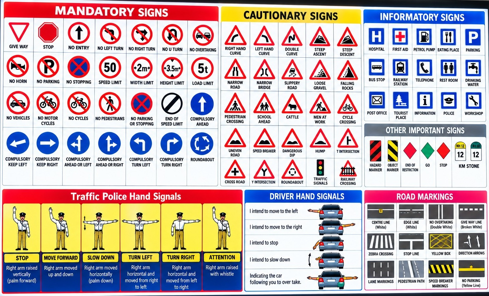

RAJU DRIVING SCHOOL
Basic Lesson Class
Digital Classroom
for Driving Theory
Sign dictionary, Malayalam explanations, instructor videos and full-screen TV lessons — connected to the same Supabase project used by the Raju Driving School website.
POSTER-BASED SIGN LIBRARY

Extension path: /basic_lesson_class/